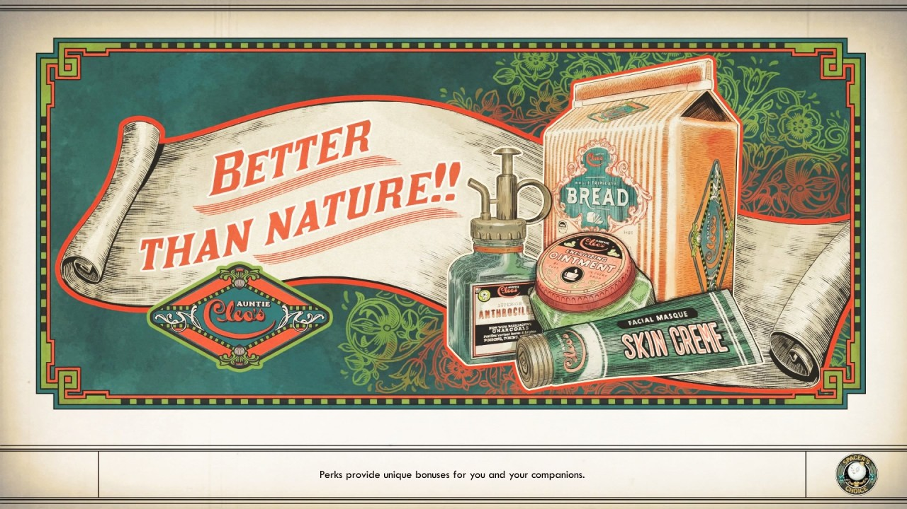
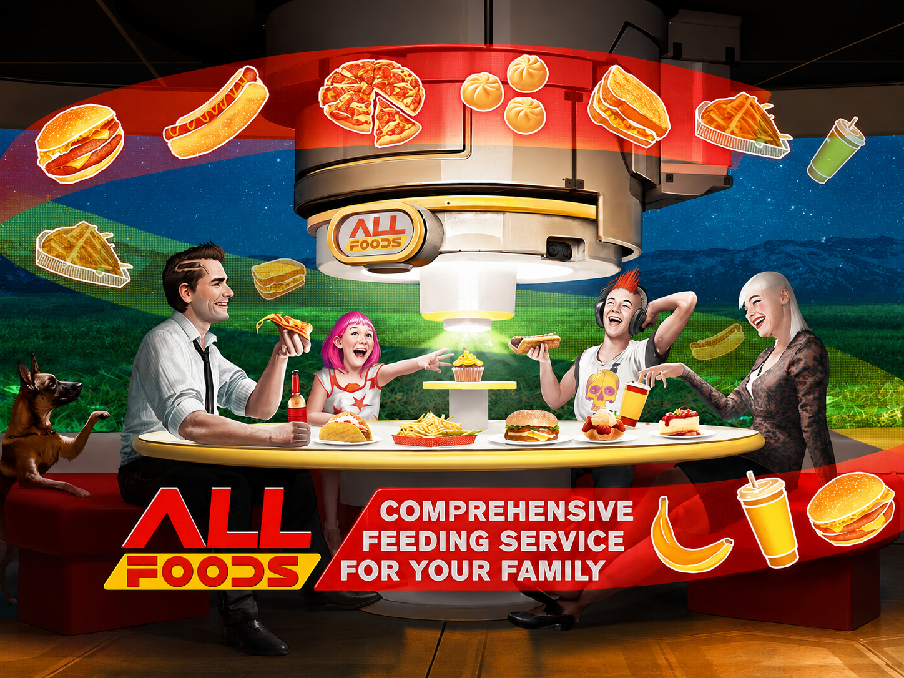

Food in video games has always been unique, some being just health items while others have more of a story to them. Food within more futuristic settings in games is not just a take on what the food would look like in the future, but also on the economy, class, and resource quality. As pretty as the packaging of the food looks, behind it are artificial ingredients that have never seen real meat or vegetables, and a world where what you eat depends on your social class. Food is engineered to keep you alive, but never truly satisfied. Companies that value efficiency rather than quality hide bad quality food underneath pretty packaging. In Starfield, people yearn to recreate the past foods of Earth. In cyberpunk, you eat what you can scrape by and dream of more. And in Outer Worlds, companies fight to make their brand of food the best while their employees suffer for it. So the next time you eat an item in the game, take the time to understand the food economy of the world; it might surprise you.

